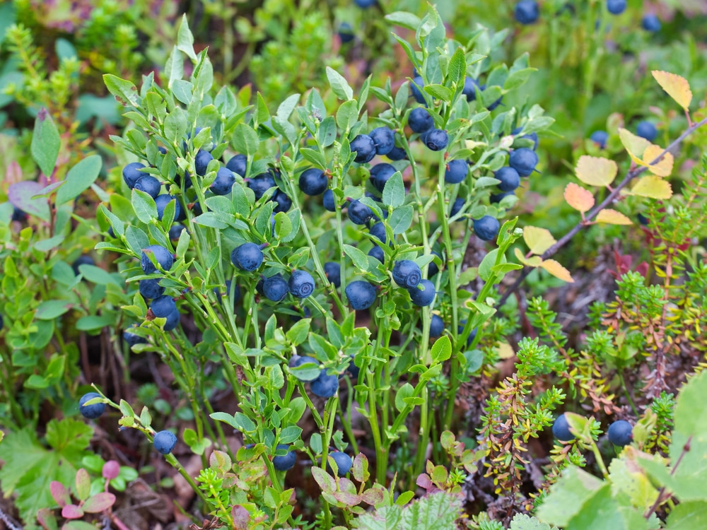

Blueberry Pie

Why Blueberry Pie?
Everyone has room for dessert...why not relieve that hunger with a freshly baked Blueberry Pie! Blueberry pie has swept international dinner tables since its first documented recipe in the "Appledore" cook book from Northern Europe in 1872.
Ingredients Needed
- ¾ cup white sugar
- 3 tablespoons cornstarch
- ½ teaspoon ground cinnamon
- ¼ teaspoon salt
- 4 cups fresh blueberries
- 1 (14.1 ounce) package double-crust pie pastry, thawed
- 1 tablespoon butter
Make it Yourself!

Baking Directions
- Set an oven rack to the lowest position and preheat the oven to 375 degrees F
- Mix sugar, cornstarch, cinnamon, and salt together in a bowl; sprinkle over blueberries.
- Line a pie dish with one pie crust. Pour berry mixture into the crust and dot with butter. Cut remaining pastry into strips to weave a lattice top.
- Bake pie on the lowest oven rack until filling is bubbling and crust is golden brown, about 50 minutes.